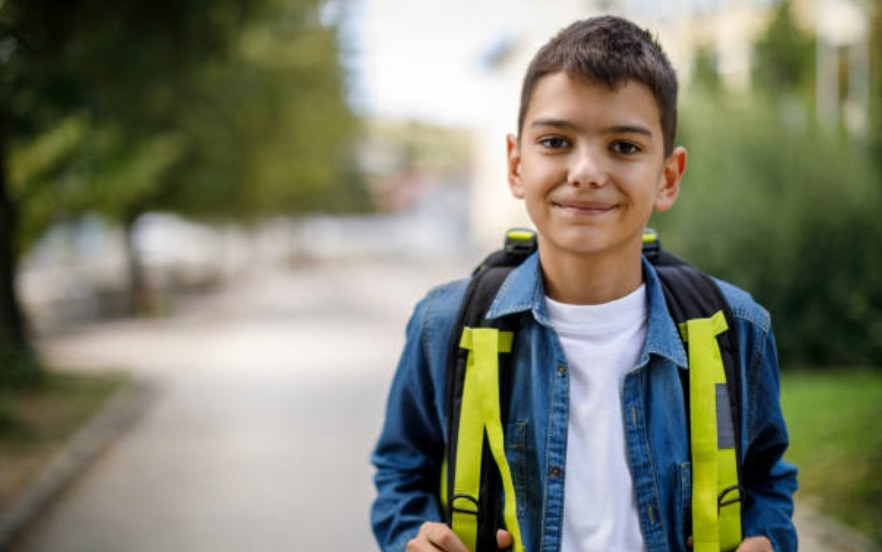

¡Nuestro impacto es real!
Lifting Hands a través de programas integrales en educación, psicología, salud, y desarrollo comunal, impactamos a más de 350 personas al mes en comunidades vulnerables de Costa Rica.
Nuestro trabajo se enfoca en mejorar la calidad de vida de niños, niñas, y adolescentes, asegurando que logren explorar su máximo potencial y superar las barreras que les impiden tener éxito.
Laura, 16 años
Laura enfrentaba grandes desafíos en su educación debido a la falta de recursos en su hogar. Gracias al apoyo constante de Lifting Hands, logró graduarse del colegio con honores y ahora está cursando un técnico en informática que le permitirá romper el ciclo de pobreza en su familia.
Daniel, 10 años
Daniel vivía en un entorno de violencia y escasos recursos. A través del programa de desarrollo comunitario, recibió apoyo psicológico y educativo que le ayudó a mejorar sus calificaciones y recuperar la confianza en sí mismo. Hoy, Daniel es un ejemplo de perseverancia y está motivado a continuar sus estudios para convertirse en ingeniero.
